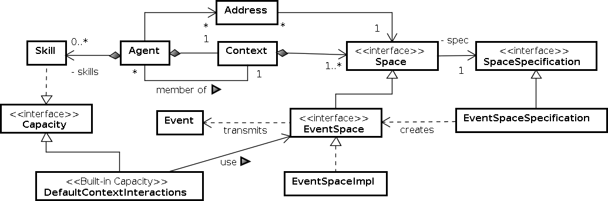
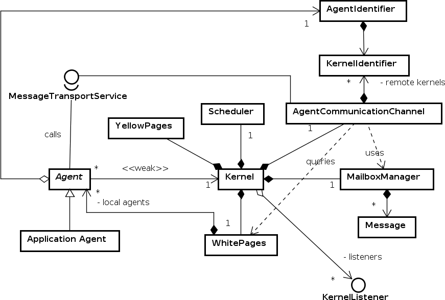

This document describes how to create a SARL Run-time Environment (SRE) with the
tinyMAS platform.
SRE executes or interprets compiled SARL code on an “hardware platform.”
The figure below illustrates the compilation process of a SARL program in which the
run-time environment is involved.
The Tiny Multiagent Platform (tinyMAS) is a very small software platform, which permits to implement
and run agent-based systems. This platform was written by Stéphane GALLAND and Nicolas GAUD for the
multiagent courses of the Computer Science Department of the
Belfort-Montbéliard University of Technology.
The purpose of this document is to describe the basics steps for making a SRE without
changing the source code of neither the platform nor the SARL compiler.
The tinyMAS SRE does not support all the elements of the SARL metamodel. Indeed the support for
external contexts and inner contexts is not implemented.
The SARL language and the tinyMAS platform have been defined based on a collection
of concepts that are formally described in their respective metamodels.
This section gives a short overview of the two metamodels, and their possible links.
Defining the links between the SARL metamodel and the metamodel of the SRE is the first
mandatory point for transforming the targeted platform to SRE.
###1.1. SARL Metamodel
The SARL language is based on a collection of concepts that are described into its metamodel.

The key elements in the SARL metamodel are:
Context: defines a set of interaction spaces in which agents are involved.
Space: or interaction space; defines a space in which interactions may occur.
Address: defines the identifiers of the agents in the interaction spaces.
EventSpace: defines a specific interaction space in which agents are interacting by firing and receiving events.
Event: defines an information/event that is exchanged by agents in an event space.
Capacity: defines a know-how of the agent; actions defines in a capacity could be invoked by the agent.
Skill: defines a specific implementation of a capacity. When a capacity’s action is invoked by an agent, the corresponding implementation in the skill is called.
Behavior: defines a sub-part of the agent’s behavior.
Built-in capacities: the capacities that are known by the agents by default. The corresponding skills are provided by the run-time environment.
###1.2. TinyMAS Metamodel
The tinyMAS platform is based on a collection of concepts that are described into its metamodel.

The key elements in the tinyMAS metamodel are:
AgentIdentifier: defines the identifiers of the agents.
Agent: defines the concept of agent. Application agents must be defined in sub-classes.
Message: defines the base information exchanged by the agents.
MessageTransportService (and AgentCommunicationChannel): define the routing mechanism for the messages.
MailboxManager: defines a container of received messages for each agent.
WhitePages: defines a repository of all the agents in the system. It maps the agent identifiers to the agents.
YellowPages: defines a repository of services that could be provided by the agents. It maps the name of a service to a list of agent identifiers.
Scheduler: defines the agent execution policy.
Kernel: represents the entire tinyMAS platform.
KernelListener: describes an object that could be notified when a specific event occured in the tinyMAS kernel.
###1.3. Linking the metamodels’ concepts
The elements to define for creating a SRE are described in the following table.
This table provides the mapping of these elements (several SARL concepts) to
the corresponding implementation approach for tinyMAS.
The first column of the table gives the key point to consider for creating a SRE.
The second column provides the key SARL concepts.
And the third column describes the basics of the implementation for tinyMAS.
SARL Element
SARL Concept
tinyMAS Implementation
Identifying the agents
Address
tinyMAS provides the concept of AgentIdentifier. This identifier contains a reference to the kernel identifier, and the UUID of the agent. The SARL Address is for a specific interaction space. It contains the space identifier, and the UUID of the agent. For making the implementation simple, we assume that there is only the SARL default space available. The other spaces will not be supported by a tinyMAS implementation.
Agent abstraction
Agent
A specific implementation of the tinyMAS Agent should be coded. This implementation must have a reference to the SARL Agent. Additionally, the tinyMAS Agent will be the place to write the support for the agent life-cycle and the built-in capacities.
Exchanged information format for direct interaction
Event
The interaction in the tinyMAS platform is based on the concept of Message. tinyMAS provides all the features for routing and delivering the messages. Because the SARL agents are exchanging events by default, the tinyMAS cannot be directly delivered to the SARL agents. Linking the Message and Event concepts is done by considering that each Event occurrence must be enveloped by a Message, i.e. the content of a tinyMAS message is a SARL event.
Receiving SARL events
Behavior units on
A specific module in tinyMAS must be written for invoking the SARL behavior units on each SARL event that are in the received tinyMAS messages.
Default context definition
Context
In SARL, every agent exists in a context, named the default context. It is mandatory for tinyMAS to provide an implementation for the default context.
Default space definition
EventSpace
In SARL, every agent could interact through the default interaction space. It is mandatory for tinyMAS to provide an implementation for the default space.
Agent life-cycle
The agent life-cycle in tinyMAS is based on the calls to the functions start for initialization, live for running the agent behavior, and end for destroying the agent. The agent life-cycle in SARL is different. It is based on the receiving of events. The Initialize event represents the initialization of the agent. The Destroy event represents the agent destruction. The other events enable to create the agent behavior. Because the tinyMAS agent is the one that will be executed by tinyMAS, it is mandatory to generates the SARL events in the three tinyMAS life-cycle functions, a.k.a. start, live, end.
Managing platform events
AgentSpawned, AgentKilled
Several SARL events are assumed to be fired by the SRE. The two events that will be supported by tinyMAS are AgentSpawned for agent spawning, and AgentKilled for agent destruction. The other SARL platform events are ignored by tinyMAS, e.g. ContextJoined, ContextLeft, MemberJoined, MemberLeft.
Agent Spawning
spawn functions
A specific agent spawning function must be written for creating a tinyMAS agent that is embedding a SARL agent definition. This spawning functions will be invoked by the built-in capacities (see below).
It is assumed that every SARL agent always contains the skills for a specific set of capacities, named the built-in capacities. These skills are supposed to be provided by the SRE. Consequently, each built-in capacity must have an implementation based on the tinyMAS features.
SRE Booting
An utility class for booting the tinyMAS SRE must be provided. Usually, this boot class takes the fully qualified name of the agent to launch, and the parameters to give to this agent. The boot class is supposed to set up the tinyMAS platform for being used as a SRE, and to launch SARL agents.
##2. Mapping of the identifiers
AgentIdentifier in tinyMAS is based on a UUID and a reference to the identifier of the kernel.
Because AgentIdentifier does not provide a function for retrieving the UUID, we
should write an utility class for obtaining it.
The AgentIdentifier string representation contains the UUID, followed by a column character
and the kernel identifier.
This utility class will be used for extracting the UUID of the tinyMAS agent identifier
in order to create SARL address on the fly.
final class Identifiers {
static def toUUID(aid : AgentIdentifier) : UUID {
val aidstr = aid.toString
val index = aidstr.indexOf(":")
return UUID::fromString(aidstr.substring(0, index))
}
}
##3. Definition of the default context
A SARL Context defines the boundary of a sub-system, and gathers a collection of interaction Spaces.
In each context, there is at least one particular space called the default space to which all agents in this
context belong. This ensures the existence of a common shared space to all agents in the same context.
Each agent can then create specific public or private spaces to achieve its personal goals.
Since their creation, agents are incorporated into a context called the default context.
The concept of context is not explicit in tinyMAS, i.e. all agents are evolving in the same and unique
context.
Because SARL agents require to have access to the instance of the default context, a specific
implementation must be provided upon the tinyMAS API.
###3.1. Definition of the context class
A SARL context must be a class that is implementing the AgentContext type (provided in the SARL API).
class TMAgentContext implements io.sarl.lang.core.AgentContext {
// The code in the rest of this section will appear here
}
###3.2. Definition of the context identifier
A SARL context must have a unique identifier.
We assume that only one context, the default context, will exist in
the SARL applications ran with tinyMAS.
In order to retrieve easy the UUID of the default (root) context,
we define the identifier as a public constant.
public static val TINYMAS_AGENT_CONTEXT_ID = UUID::fromString("cdb0d568-4059-40cf-96c4-d078fee91cb1")
def getID : UUID {
TINYMAS_AGENT_CONTEXT_ID
}
###3.3. Declaration of the default space of the context
A SARL context has a default interaction space.
We declare the default space in the context class TMAgentContext.
The concrete definition of the default space class named TMDefaultSpace is done later in this document.
###3.4. Definition of the getter functions for spaces
A SARL context provides a collection of functions for retrieving the spaces inside the context.
Please note that we assume that only one context will exist in the tinyMAS application.
This context will be assumed to be the default context.
In the same way, we assume that only one space (the default space) will exist in the default
context.
Consequently, the function getSpace() replies the collection of all the context as
an singleton collection instance that is containing the default space.
This function must reply a auto-synchronized collection. We use the Collections3 utility
class, provided in the SARL API, for creating the synchronized collection.
The first parameter of the synchronizedSingleton function is the collection to synchronized,
the second parameter is the object on from which the synchronization token will be obtained.
The getSpace(Class) function is supposed to reply the existing spaces that were created
by using the given type of space specification.
Because of our assumption on the space singleton in the context, this function replies
only the default space if the given space specification type is EventSpaceSpecification.
The getSpace(UUID) function replies the default space only if the given UUID is the
identifier of the default space. In the other cases, the function replies nothing.
def getSpaces : SynchronizedCollection<? extends Space> {
Collections3::synchronizedSingleton(this.defaultSpace)
}
def getSpaces(spec : Class<? extends SpaceSpecification<S>>)
: SynchronizedCollection<S>
with S extends Space {
if (spec !== null && spec == typeof(EventSpaceSpecification)) {
return Collections3::synchronizedSingleton(this.defaultSpace as S)
}
return Collections3::emptySynchronizedSet
}
def getSpace(spaceUUID : UUID) : S
with S extends Space {
if (spaceUUID == this.defaultSpace.spaceID.ID) {
return this.defaultSpace as S
}
return null
}
The function call synchronizedSingleton is provided by the SARL Development Kit in order to create synchronized collections.
The argument of this function is the collection to synchronize.
Definition of the creation functions for spaces
The context provides functions for creating spaces. Because we assume that no additional space could be created upon the tinyMAS
SRE implementation, all these functions generates an “unsupported operation” exception.
def createSpace(spec : Class<? extends SpaceSpecification<S>>,
spaceUUID : UUID, creationParams : Object*)
: S
with S extends Space {
throw new UnsupportedOperationException
}
def getOrCreateSpaceWithSpec(spec : Class<? extends SpaceSpecification<S>>,
spaceUUID : UUID,creationParams : Object*)
: S
with S extends Space {
throw new UnsupportedOperationException
}
def getOrCreateSpaceWithID(spaceUUID : UUID,
spec : Class<? extends SpaceSpecification<S>>,
creationParams : Object*)
: S
with S extends Space {
throw new UnsupportedOperationException
}
Definition of the constructor
The constructor of the agent context class must be defined for initializing the fields of the class.
The instance of the default space must be provided as parameter in order to set the defaultSpace field.
Additionally, the default space instance must be linked to the context (see the definition of the space
class below). In the constructor, the setAgentContext is invoked on the default space.
new (defaultSpace : TMDefaultSpace) {
this.defaultSpace = defaultSpace
this.defaultSpace.setAgentContext(this);
}
###3.5. Definition of the default space
The default space is the interaction space in which all the agents will be involved.
Because we assume that only one agent context exists in the system, the default space
becomes a singleton (only one default space could exist in a context).
Definition of the space class
A SARL default space must support an event-based interaction mechanism.
Consequently, the default space class must implement the EventSpace interface
that is provided by the SARL API.
class TMDefaultSpace implements io.sarl.lang.core.EventSpace {
// The code in the rest of this section will appear here
}
Definition of the context identifier
A SARL space must have a unique identifier. We assume that only one context, the default context, will exist in
the SARL applications ran with tinyMAS. Consequently, the default space instance becomes a singleton.
In order to retrieve easy the UUID of the default (root) context, we define the identifier as a public constant.
We defines the function getSpaceID, which is replying the space identifier.
The initialization of the spaceID field is not discussed yet, because
the context identifier is mandatory for building the space identifier.
The space identifier creation is discussed in the following section.
public static val TINYMAS_DEFAULT_SPACE_ID = UUID::fromString("1db39309-8be7-4809-ad76-1ede6e792296")
var spaceID : SpaceID
def getSpaceID : SpaceID {
this.spaceID
}
Linking the agent context to the space
We need to have a reference to the agent context that is containing this space in order
to create the space identifier and to provide a reference to this context from the space.
Firstly, the reference to the agent context is declared as a weak reference field, named
context.
The initialization of the context field is done by the setAgentContext function.
As illustrated in the context definition section, this function is invoked when creating
the agent context in order to be binded to its default space.
The space identifier is initialized in the setAgentContext because this is the place
where the space’s UUID and the context’s identifier are known.
Finally, the getter function for retrieving the agent context is defined too.
var context : WeakReference<TMAgentContext>
package def setAgentContext(context : TMAgentContext) {
this.context = new WeakReference(context)
this.spaceID = new SpaceID(context.ID, TINYMAS_DEFAULT_SPACE_ID, null)
}
def getAgentContext : TMAgentContext {
this.context.get
}
##4. First definition of the agent
The next step is the definition of an abstraction for the SARL agent that could be
executed as a tinyMAS agent.
The easiest way to proceed is to create a tinyMAS agent class that has a reference
to the SARL agent. Then, the specific tinyMAS agent implementation will map all
the features from the tinyMAS platform to their equivalent features for the SARL agent.
###4.1. SARL Agent inside tinyMAS Agent
We define a specific tinyMAS agent type, which is named TMSarlAgent.
This agent definition contains a reference to the instance of the SARL agent definition,
in the field sarlAgent. The getter of the SARL agent is also defined.
We define the getID function in order to easily retrieve the unique identifier of the
agent. This unique identifier is the identifier of the SARL agent.
A constructor is defined for initializing the sarlAgent field.
The constructor will be refined and redefined in the rest of this document.
Event-based interaction is at the heart of the interaction mechanisms that could be used by the SARL agent.
The TMSarlAgent class must provide tools for routing events when the basic interaction mechanism of
tinyMAS is based on messages.
The first feature to implement is the firing/routing of SARL event. We define the fireEvent function that
is extracting the SARL agent’s behavior units (the on blocks of code), and is calling them with the event given as parameter.
Retrieving the SARL behavior unit is a algorithm that is following the SARL specifications.
Fortunately, the SARL API provides an utility class for exploring the Java definition
of an agent (by using the Java reflection mechanism), and providing the list of the
behavior units that are taken a given event as input.
The utility class is named BehaviorGuardEvaluatorRegistry. According to the SARL API, one instance of this registry may be
created for each agent. Consequently, we created a final field named evaluatorRegistry that references
the BehaviorGuardEvaluatorRegistry instance.
The first line of fireEvent retrieves the list of the behavior units that
are defined in the SARL agent (and any internal behavior) for the given event.
The second part of the fireEvent function goes through the behavior units
for evaluating there guards. The function evaluateGuard evaluates the guard
of the behavior unit on the given event, and, if the guard is true,
it fills the given list of handlers with a call to the behavior unit’s code.
The third part of the fireEvent function invokes the behavior units’ code that have a true guard.
val evaluatorRegistry = new BehaviorGuardEvaluatorRegistry
package def fireEvent(^event : Event) {
var evaluators = this.evaluatorRegistry.getBehaviorGuardEvaluators(^event)
var handlers : Collection<Runnable> = new ArrayList
for (evaluator : evaluators) {
evaluator.evaluateGuard(^event, handlers);
}
for (handler : handlers) {
handler.run();
}
}
###4.3. Registering the SARL agent as behavior unit provider
For enabling the BehaviorGuardEvaluatorRegistry instance to retrieve the behavior units
of the SARL agent (and any internal behavior), we must register the SARL agent
as a provider of behavior units to the BehaviorGuardEvaluatorRegistry instance.
The easier way to proceed is to register the SARL agent when the tinyMAS agent is starting;
and to unregister the SARL agent when the tinyMAS agent is stopping.
These two life-cycle functions are supported by the start and [:stopfct] functions in the tinyMAS
platform.
For enabling the receiving of SARL events, we need to define a specific SARL event listener.
The easier way is to implement the EventListener interface from the SARL API (see the code
below).
The implementation of the EventListener interface implies to implement the
receiveEvent function. This function is called by the SARL infrastructure each time
an event must be treated by the agent, i.e. when the agent receives the event.
The function receiveEvent calls the already implemented function fireEvent.
Nevertheless, the receiveEvent function must ensure that the given event has
a source, i.e. the address of the sender of the event.
If the event has no source, the value of the source is forced to the address of the current
SARL agent.
In order to create the address of the current agent, we must know the
address of the agent in the default interaction space, and consequently, the default context
in which the agent exists.
We defined the defaultSpace field and the corresponds getter function for storing the
default space of the agent.
For initializing this field, we redefine the constructor.
According to the SARL specification, two events must be fired for supporting the
agents’ life-cycle. The first event corresponds to the initialization of the agent,
the Initialize event. And, the second event corresponds to the destruction of the
agent, the Destroy event.
The tinyMAS implementation of the SRE must fire these two events according
to the tinyMAS agent life-cycle. In this platform, the starting of the agents
is supported by the start function. And the destruction of the agents is supported
by the stop function.
For firing the Initialize event, we need to create an instance of this event into
the start function. But, from the SARL API documentation, the Initialize event
must take the initialization parameters to pass to the agent at its start-up.
For supporting these initialization parameters, we define the parameters field that is
initialized in the agent type constructor.
Then, the start function is updated for setting the parameters of the Initialize event;
and for firing the event with a call to the receiveEvent function.
By symmetry, the Destroy event is initialize and fired in the stop function of the
agent type.
Spawning agents is a key feature of the execution platform.
This feature is used for booting the initial agent, and by the agent built-in capacities
for creating new agents.
In order to provide a reusable spawning function, we define the Spawner utility class
that contains the static definition of the spawning functions of SARL agents on the tinyMAS
platform.
###5.1. Creating a tinyMAS agent from a SARL agent
The first utility function that we define is createAgent.
It enables to create an instance of TMSarlAgent from a SARL agent type.
The parameters of the functions are the ones required for building an instance of a SARL agent:
defaultSpace: the instance of the default space in which the SARL agent will interact.
agentType : the type of SARL agent to create.
spawerID : the identifier of the agent’s spanwer, or null if the platform has spawned the agent.
parentID : the identifier of the agent’s parent, usually the identifier of the default context in the timeMAS SRE.
agentID : the identifier to give to the created agent, or null if the identifier must be randomly selected.
params : the initialization parameters to pass to the created SARL agent.
The function replies the created tinyMAS agent that is binded to the SARL agent.
The code of the SARL agent creation is based on the call to the SARL agent constructor, as
defined in the SARL specification. By default, the SARL agent agents have a
constructor with three parameters:
first parameter of type BuiltinCapacitiesProvider: a provider of built-in capacity. Here we pass null as argument to the constructor in order to ignore the default initialization of the built-in capacities. This initialization will be done manually in one of the following sections.
second parameter of type UUID: the identifier of the parent context of the created agent.
third parameter of type UUID: the identifier of the created agent.
The createAgent function should ensure the given agent type could be executed on the current instance of
the tinyMAS platform. For that, we introduce two tests:
check if the given agent type is a sub-type of the Agent type provided in the SARL API; and
use the SarlSpecificationChecker provided in the SARL API for verifying that the given agent type was generated with a SARL specification version that is compatible with the version supported by tinyMAS. This interface provides default method implementation.
The obtained code is:
static val SPECIFICATION_CHECKER : SarlSpecificationChecker = new SarlSpecificationChecker {}
static def createAgent(
defaultSpace : TMDefaultSpace,
agentType : Class<? extends io.sarl.lang.core.Agent>,
spawnerID : UUID,
parentID : UUID,
agentID : UUID,
params : Object*)
: TMSarlAgent {
if (typeof(io.sarl.lang.core.Agent).isAssignableFrom(agentType)
&& SPECIFICATION_CHECKER.isValidSarlElement(agentType)) {
var theAgentID = if (agentID === null) UUID::randomUUID else agentID
var theAgentType = agentType as Class<? extends io.sarl.lang.core.Agent>
var cons = theAgentType.getConstructor(typeof(BuiltinCapacitiesProvider), typeof(UUID), typeof(UUID))
var sarlAgent = cons.newInstance(null, parentID, theAgentID)
var tmAgent = new TMSarlAgent(defaultSpace, sarlAgent, spawnerID, params)
return tmAgent
}
return null
}
###5.2. Launching a tinyMAS-SARL agent on the tinyMAS kernel
Now we have a function for creating a tinyMAS-SARL agent, it is necessary to provide
an utility function for launching this tinnyMAS-SARL agent on the tinyMAS kernel.
We define the following spawn function thats takes as parameter the timasMAS
kernel instance, and the agent to launch.
The function create the agent identifier of the agent in the tinyMAS platform, from
the identifier of the kernel, and the SARL agent identifier.
Finally, the function invokes the agent launching function of the tinyMAS kernel.
static def spawn(
kernel : Kernel,
^agent : TMSarlAgent) {
var tmid = new AgentIdentifier(kernel.kernelId, ^agent.ID.toString)
kernel.addAgent(tmid, ^agent)
}
###5.3. General utility function for spawning agents
Now, we could define a general spawning function that invokes the two previously
defined functions.
One of the key principle in the SARL specification is that each SARL agent is
provided with a collection of built-in capacities that are provided by the run-time
environment.
In this section, we define the built-in capacities that are implemented with the
tinyMAS API.
In the following code, we assume that the given implementation is
an inner class of the `TMSarlAgent` class. In this way, we will be able to access
to the features of the agent type: `getId`, `getDefaultSpace`, `killMe`.
###6.1. Definition of the Logging skill
The easiest built-in capacity to implement is the `Logging` capacity.
This capacity enables the SARL agent to log messages on the output console.
The basic principle for implementing a built-in capacity is to create
a class extending the `Skill` class, and implementing the capacity to
implement, in this case the `Logging` capacity.
There is not particular issue with the coding of this buil-in capacity.
The code is self-explaining.
```sarl
class LoggingSkill extends Skill implements Logging {
def setLoggingName(message : String) {
getId.stringRepresentation = message
}
def isErrorLogEnabled : boolean {
true
}
def isWarningLogEnabled : boolean {
true
}
def isInfoLogEnabled : boolean {
true
}
def isDebugLogEnabled : boolean {
true
}
def getLogLevel : int {
0
}
def setLogLevel(level : int) {
}
def getLogger : Logger {
null
}
def error(message : Object, exception : Throwable = null, parameters : Object*) {
System::out.println("[" + getId.getString + "] ERROR: " + message)
if (exception !== null) {
exception.printStackTrace(System::out)
}
}
def error(messageProvider : Supplier) {
System::out.println("[" + getId.getString + "] ERROR: " + messageProvider.get)
}
def warning(message : Object, exception : Throwable = null, parameters : Object*) {
System::out.println("[" + getId.getString + "] WARNING: " + message)
if (exception !== null) {
exception.printStackTrace(System::out)
}
}
def warning(messageProvider : Supplier) {
System::out.println("[" + getId.getString + "] WARNING: " + messageProvider.get)
}
def info(message : Object, parameters : Object*) {
System::out.println("[" + getId.getString + "] INFO: " + message)
}
def info(messageProvider : Supplier) {
System::out.println("[" + getId.getString + "] INFO: " + messageProvider.get)
}
def debug(message : Object, parameters : Object*) {
System::out.println("[" + getId.getString + "] DEBUG: " + message)
}
def debug(messageProvider : Supplier) {
System::out.println("[" + getId.getString + "] DEBUG: " + messageProvider.get)
}
}
```
###6.2. Definition of the Lifecycle skill
The `Lifecycle` capacity is one of the must used capacity.
It provides the support of the SARL agent life-cycle.
#### Spawning agents in the default space
Consider the agent execution mechanism in the tinyMAS platform: inside an infinite loop, each agent is run. This algorithmic
principle may be described by the following algorithm:
```sarl
while (true) {
for(a : whitePages.allAgents) {
a.live
}
refreshKernelState
}
```
The tinyMAS platform is designed for updating the kernel state after all the agent have been ran.
Consequently, the tinyMAS platform does not support the creation of agents during the execution of another agent.
If an agent spawns another agent, the real initialization of the spawned agent must be delayed until the
`refreshKernelState` is invoked.
This particular design of the tinyMAS platform is at the opposite of
the standard spawning principle in SARL: the agents are spawned
when the spawning function is called.
For fixing this issue, we need to implement a buffer of spawned
agents, that will be filled by the SARL spawning functions, and consumed
by the `refreshKernelState` function.
The simplest place where to put this code in the `TMDefaultSpace` type.
Indeed, we could assume that the agent spawning always occurs in the default space.
We update the `TMDefaultSpace` class as described in the following code.
We define the `agentsToLaunch` field as the spawn agent buffer.
The [:spawnfct] function creates the agent instance, based on the `Spawner` utility class,
and adds the created agent into the buffer.
The consumption of the spawn agent buffer is supported by the ``consumeAgentToLaunch`
function. This function replies the buffer content, and clears the buffer.
```sarl
var agentsToLaunch : List = new ArrayList
def spawn(
anAgent : Class<? extends io.sarl.lang.core.Agent>,
spawnerID : UUID,
agentID : UUID,
params : Object*)
: UUID {
val ^agent = Spawner::createAgent(
this,
anAgent,
spawnerID,
TINYMAS_DEFAULT_SPACE_ID,
agentID,
params)
this.agentsToLaunch += ^agent
return ^agent.ID
}
def consumeAgentToLaunch : Iterable {
var iterable = this.agentsToLaunch
this.agentsToLaunch = new ArrayList
return iterable
}
```
#### First definition of the skill
The functions for spawning the agents delegate the spawning to
the default space (as defined in the previous section).
The `killMe` function enables to stop the agent which is invoking
this function. The agent killing is delegated to the tinyMAS agent killing
function, also named `killMe`. The `owner` is a syntactic simplification of
a call to `getOwner`, which replies the agent owning the skill.
One important point regarding the expected behavior of the SARL `killMe` is
that is must never return from the point of view of its caller.
For simulating this behavior, we could use the exception mechanism by throwing
a specific internal exception that is not a real error but
represents the "no-return code" case.
This specific exception is named `NoReturnCodeException`, and is defined
in the next section.
```sarl
class LifecycleSkill extends Skill implements Lifecycle {
def spawn(
agentClass : Class<? extends io.sarl.lang.core.Agent>,
params : Object*)
: UUID {
return defaultSpace.spawn(agentClass, null, params)
}
def spawn(
nbAgents : int,
agentClass : Class<? extends io.sarl.lang.core.Agent>,
params : Object*)
: Collection {
var list = newArrayList
for (i : 1..nbAgents) {
var id = defaultSpace.spawn(agentClass, null, params)
if (id !== null) {
list += id
}
}
return list
}
def spawnInContext(
agentClass : Class<? extends io.sarl.lang.core.Agent>,
context : AgentContext,
params : Object*)
: UUID {
if (context.ID == defaultSpace.agentContext.ID) {
return defaultSpace.spawn(agentClass, owner.ID, null, params)
}
return null
}
def spawnInContext(
nbAgents : int,
agentClass : Class<? extends io.sarl.lang.core.Agent>,
context : AgentContext,
params : Object*)
: Collection {
var list = newArrayList
if (context.ID == defaultSpace.agentContext.ID) {
for (i : 1..nbAgents) {
var id = defaultSpace.spawn(agentClass, null, params)
if (id !== null) {
list += id
}
}
}
return list
}
def spawnInContextWithID(
agentClass : Class<? extends io.sarl.lang.core.Agent>,
agentID : UUID,
context : AgentContext,
params : Object*)
: UUID {
if (context.ID == defaultSpace.agentContext.ID) {
return defaultSpace.spawn(agentClass, owner.ID, agentID, params)
}
return null
}
def killMe {
(owner as TMSarlAgent).killMe
throw new NoReturnCodeException
}
}
```
#### Support of the no-return functions
The exception that is simulating a no-return-code is defined as:
```sarl
class NoReturnCodeException extends RuntimeException {
}
```
#### Catching the no-return-code exception
For avoiding the tinyMAS platform to stop because the `NoReturnCodeException`
was not caught, we must redefined the `fireEvent` function in the `TMSarlAgent`
type. Indeed, this function is the one which is running the code of the SARL event
handlers in which the SARL `killMe` function could be invoked.
Each call to a piece of SARL code is enclosing by a try-catch statement that
is simply ignoring the `NoReturnCodeException` exception.
```sarl
package def fireEvent(^event : Event) {
var evaluators = this.evaluatorRegistry.getBehaviorGuardEvaluators(^event)
var handlers : Collection = new ArrayList
for (evaluator : evaluators) {
try {
evaluator.evaluateGuard(^event, handlers);
} catch (e : NoReturnCodeException) {
}
}
for (handler : handlers) {
try {
handler.run()
} catch (e : NoReturnCodeException) {
}
}
}
```
###6.3. Definition of the DefaultContextInteractions skill
The `DefaultContextInteractions` capacity enables the agent to have
interaction in the default space.
#### First definition of the skill
The first and incomplete definition of the `DefaultContextInteractions` capacity
for the tinyMAS platform is provided below.
The functions that replies the default context and the default space are defined
for replying the context and space that are referenced in the agent.
The `owner` is a syntactic simplification of a call to `getOwner`, which replies
the agent owning the skill.
The `getAddress` function replies the address of the owner in the default space.
Its behavior is delegated to the `getAddress(UUID)` of the default space.
The `isDefaultContext` functions implemented in order to test if their parameters correspond
to the default context.
Similarly, the `isDefaultSpace` functions are implemented in order to test if their parameters correspond
to the default space.
The `isInDefaultSpace` function replies true if the given event is fired
into the default space. The function behavior is delegated to the `isDefaultSpace` function
with the event source identifier as argument.
```sarl
class DefaultContextInteractionsSkill extends Skill implements DefaultContextInteractions {
def getDefaultContext : AgentContext {
((owner as TMSarlAgent).defaultSpace as TMDefaultSpace).agentContext
}
def getDefaultSpace : EventSpace {
(owner as TMSarlAgent).defaultSpace
}
def getDefaultAddress : Address {
var o = owner as TMSarlAgent
o.defaultSpace.getAddress(o.sarlAgent.ID)
}
def isDefaultContext(context : AgentContext) : boolean {
context.ID == (defaultSpace as TMDefaultSpace).agentContext.ID
}
def isDefaultContext(contextID : UUID) : boolean {
contextID == (defaultSpace as TMDefaultSpace).agentContext.ID
}
def isDefaultSpace(^space : Space) : boolean {
^space.spaceID == defaultSpace.spaceID
}
def isDefaultSpace(^space : SpaceID) : boolean {
^space == defaultSpace.spaceID
}
def isDefaultSpace(^space : UUID) : boolean {
^space == defaultSpace.spaceID.ID
}
def isInDefaultSpace(^event : Event) : boolean {
isDefaultSpace(^event.source.spaceID)
}
}
```
#### Firing events in the default space
Firing events in the default space could be done by calling the `emit`
and `willReceive` functions.
The `emit` function fires the given event into the default space.
Optionally, a scope could be provided for restricting the set of the
event's receivers. The `emit` function delegates its behavior to
the `emit` function of the default space.
One import point in the implementation of the `emit` function is the
check of the event's source. Indeed, sometimes, the given event has no source
address set. Because the default space could not set this address when it is
`null`, we must check this case and force the value of the event source
address to the address of the current agent.
The `willReceive` function is a inverted version of the syntactic call to the
firing function. This function enables the developer to send the event
to a specific agent with the following syntax:
receverID.willReceive(^event)
The obtained code is:
```sarl
def emit(^event : Event, scope : Scope = null) {
if (^event.source === null) {
^event.source = defaultSpace.getAddress(owner.ID)
}
defaultSpace.emit(owner.ID, ^event, scope)
}
def willReceive(receiver : UUID, ^event : Event) {
emit(^event) [ it.UUID == receiver ]
}
```
#### Spawning agents in the default context
Spawning an agent in the default context could be done by calling the `spawn` function of
the `DefaultContextInteractions` capacity.
This function delegates its behavior to the `spawn` function that is already defined
in the tinyMAS-SARL default space class.
```sarl
def spawn(agentType : Class<? extends io.sarl.lang.core.Agent>, params : Object*) : UUID {
(defaultSpace as TMDefaultSpace).spawn(agentType, owner.ID, null, params)
}
```
###6.4. Definition of the Behaviors skill
The `Behaviors` capacity enables the agent to have
sub-behaviors that could be dynamically added and removed.
#### First definition of the skill
The first and incomplete definition of the `Behaviors` capacity for the tinyMAS platform is provided below.
The first function implemented is the `asEventListener` function. It replies the object that could serve as a
SARL event listener for the agent. In the tinyMAS implementation, we have already implemented the `EventListener`
interface in the `TMSarlAgent` class. In other word, the tinyMAS agent type is already a SARL event listener by itself.
Consequently, the `asEventListener` function replies the owner of the skill, i.e. the agent.
```sarl
class BehaviorsSkill extends Skill implements Behaviors {
def asEventListener : EventListener {
owner as TMSarlAgent
}
}
```
#### Registering a behavior
A `Behavior` instance could be registered in order to be run for the current agent.
The `registerBehavior` function enables the SARL developer to add a `Behavior`
instance into the registered sub-behaviors of the agent.
In order to store the list of the sub-behavior, we must define the
`behaviors` field. The content of this field is increased by the `registerBehavior`
function.
```sarl
val behaviors : List = new ArrayList
def registerBehavior(attitude : Behavior) : Behavior {
if (attitude !== null) {
this.behaviors += attitude
}
return attitude
}
```
#### Unregistering a behavior
The `unregisterBehavior` function enables the SARL developer to remove a `Behavior`
instance from the registered sub-behaviors of the agent.
The content of the `behaviors` field defined in the previous section is decreased
with the given attitude.
```sarl
def unregisterBehavior(attitude : Behavior) : Behavior {
if (attitude !== null) {
this.behaviors -= attitude
}
return attitude
}
```
#### Waking the behaviors with an event
The SARL specification indicates that it is possible for an agent to fire an event
inside its internal context. In other words, the event will be received by
the agent, and its internal behaviors, and not by the other agents.
The `wake` function is provided for supporting this feature.
Its implementation retrieves the SARL event listener of the agent by calling
the `asEventListener` function. And, it invokes the receiving function of
the listener with the event as argument.
If a scope is provided, it must be used for filtering the receivers which have
an address. In the context of the tinyMAS platform, only the agent fits this requirement.
Consequently, the scope is matched against the agent's address in its internal context
(not the agent's address in the default space of its default context).
The `getInnerAddress` function computes the agent's address in the agent internal context.
```sarl
def wake(^event : Event, scope : Scope = null) {
if (scope === null || scope.matches(innerAddress)) {
asEventListener.receiveEvent(^event)
}
}
private def getInnerAddress : Address {
var id = (owner as TMSarlAgent).ID
return new Address(
new SpaceID(id, UUID.randomUUID, typeof(EventSpaceSpecification)),
id)
}
```
#### Accessing to the collection of the registered behaviors
Two functions must be implemented for accessing to the internal list of the behaviors:
* `hasRegisteredBehavior` indicates if a behavior is registered; and
* `getRegisteredBehaviors` replies an unmodifiable collection of the registered behaviors.
```sarl
def hasRegisteredBehavior : boolean {
!this.behaviors.isEmpty
}
def getRegisteredBehaviors : SynchronizedIterable {
this.lock.readLock.lock
try {
Collections3::unmodifiableSynchronizedIterable(this.behaviors, this.lock)
} finally {
this.lock.readLock.unlock
}
}
val lock : ReadWriteLock = new ReentrantReadWriteLock
```
The function call `Collections3::unmodifiableSynchronizedIterable` is provided by the SARL Development Kit in order to create synchronized collections.
The first argument of this function is the collection to synchronize.
The second argument is the locking object that is supporting the synchronization of
the given collection.
Usually, the locking object is an instance of `ReentrantReadWriteLock`.
The call to `Collections3::unmodifiableSynchronizedIterable` is enclosed by a typical code block that is enabling the
synchronization on the list of behaviors as reader of this list.
If you don't want to apply a real synchronization on the replied collection, you could
replace the previous code by:
```sarl
def getRegisteredBehaviors : SynchronizedIterable {
Collections3::unmodifiableSynchronizedIterable(this.behaviors, NoReadWriteLock::SINGLETON)
}
```
In the previous code, `NoReadWriteLock::SINGLETON` is a specific locking object that is doing exactly
nothing regarding the synchronization. In other words, this this locking object, the
synchronization of the collection is disable.
#### Updating the tinyMAS agent life-cycle for (un)registering the behaviors
There is an key difference between the SARL run-time principle, which is fully
distributed (everything is registered, run, unregistered in parallel),
and the tinyMAS run-time principle, which is fully sequential (everything is
controlled in a big virtual loop).
Consequently, it is mandatory to map the fully-distributed point-of-view
from the SARL specification to the sequential point-of-view from tinyMAS.
##### Defining buffers of behaviors
In order to map the SARL behavior support to tinyMAS platform,
the `BehaviorsSkill` type must store the registered and unregistered behaviors separately.
Indeed, the registered behaviors must become SARL event listeners in the agent context.
And, the unregistered behaviors must be SARL event listener anymore.
In order to separate these two subsets of behaviors, we define the two fields
`registrationWaiters` and `unregistrationWaiters`, which represent the behaviors
that are waiting for event listening registration, and event listener unregistration, respectively.
We define the `getRegistrationWaiters` and `getUnregistrationWaiters` functions
for replying and consuming these subsets. These functions will be invoked later,
from the tinyMAS agent living function.
```sarl
var registrationWaiters : List